Clonetube
Clonetube is more than a regular clone, using most of the skills a
web developer will use on a day to day basis, this project will
surprise you. This project is merely for educational and to show
skills. Is not intended for profit.
Aquí se puede visualizar un video con el reproductor. Tiene dos
seccciones principales, la izquierda que incluye el reproductor de
video, así como los datos generales del video y el usuario que lo
publicó. También cuenta con una sección de comentarios. La sección
izquierda cuenta con los video relacionados al video actual
reproduciéndose y un botón toggle para seleccionar la reproducción
automática del videos al terminar el video actual.
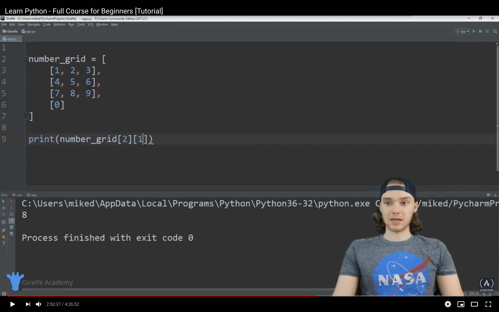
El reproductor de video cuenta con una sección de botones de control.
Los cuales incluyen los botones de play/pausa, siguiente video, un
slider para controlar el volumen, un botón para mostrar un modal de
opciones, activación de un reproductor en miniatura, activación del modo
teatro y activación del modo de pantalla completa. También cuenta con
una barra de progreso, la cual muestra el progreso actual del video, asi
como los segundos en los cuales existe partes del video previamente
descargadas (buffer). El modal de opciones muestra la activación del
modo de reproducción del siguiente video automática, la activación de la
marca de agua del canal y poder cambar la velocidad en la cual se
reproduce el video.
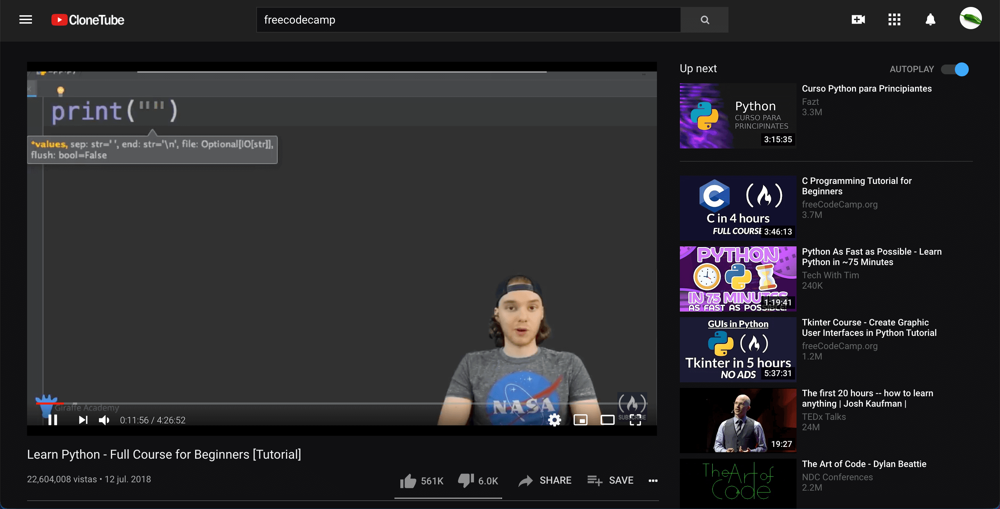
El reproductor miniatura permite reproducir videos y navegar por el
sitio web y realizar actividades simultáneas con la reproducción del
reproductor miniatura. Se pueden cambiar y reproducir diferentes videos
mientras el reproductor miniatura esta activo, además de eso, se puede
regresar a la página de video.
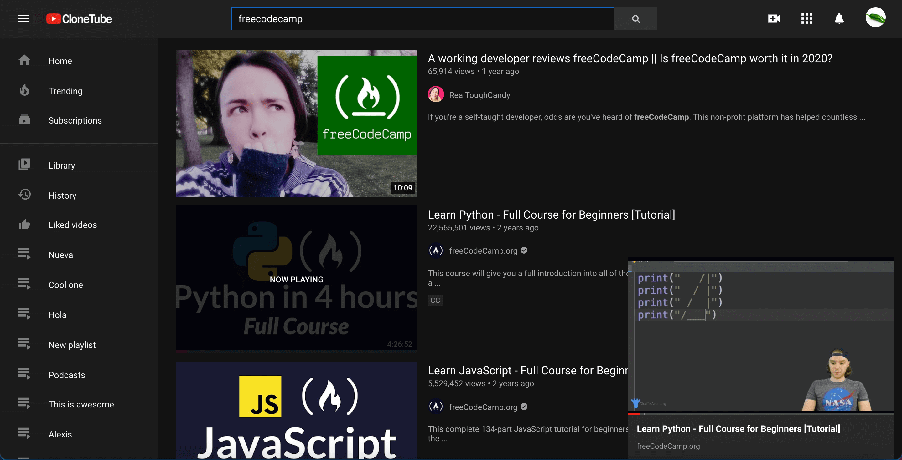
Al finalizar un video, y tener desactivada la reproducción automática
del siguiente video, el reproductor nos mostrará videos recomendados
(Solo en escritorio).
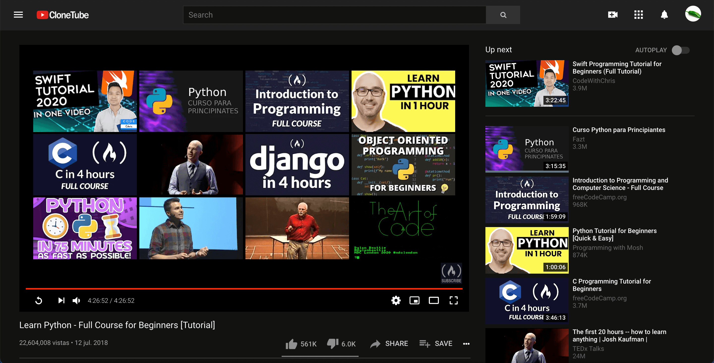
La sección de la información del video, muestra la fecha, el numero de
visualizaciones, el usuario que publicó el video, número de me gustas y
no me gustas, además que identifica si el usuario ha dado me gusta o no
me gusta al video. Contiene la descripción del video, que identificará
mediante funciones de expresiones regulares, los links y las marcas de
tiempo, yendo al tiempo indicado en el video reproduciendose. También
tiene un botón que brinda la opción de subscribirse al canal o eliminar
la subscripción.
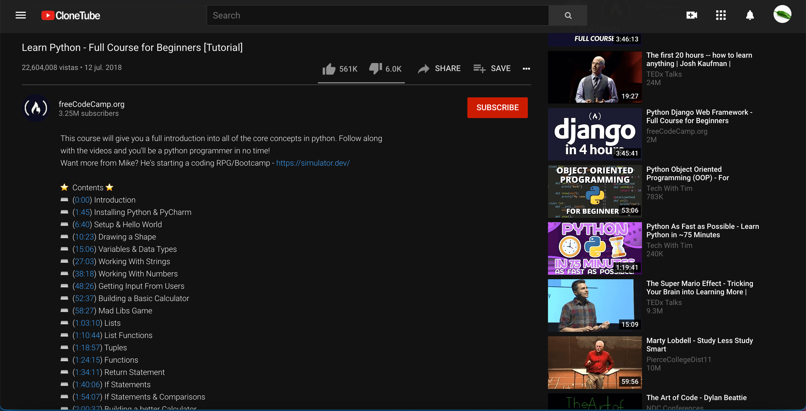
La sección de comentarios, permite publicar, visualizar y eliminar
(publicados por uno mismo) comentarios, además de esto el texto de los
comentarios es procesado por funciones de expresiones regulares al igual
que la descripción del video, identificando marcas de tiempo y links,
además que identifica si el usuario ha dado me gusta o no me gusta al
comentario. También hay una opción para agregar videos a listas de
reproducción.
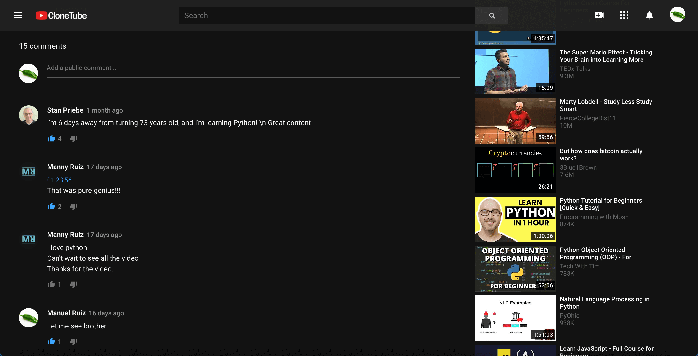
También hay una opción para agregar videos a listas de reproducción. A
una nueva lista de reproducción o a una lista de reproducción existente.
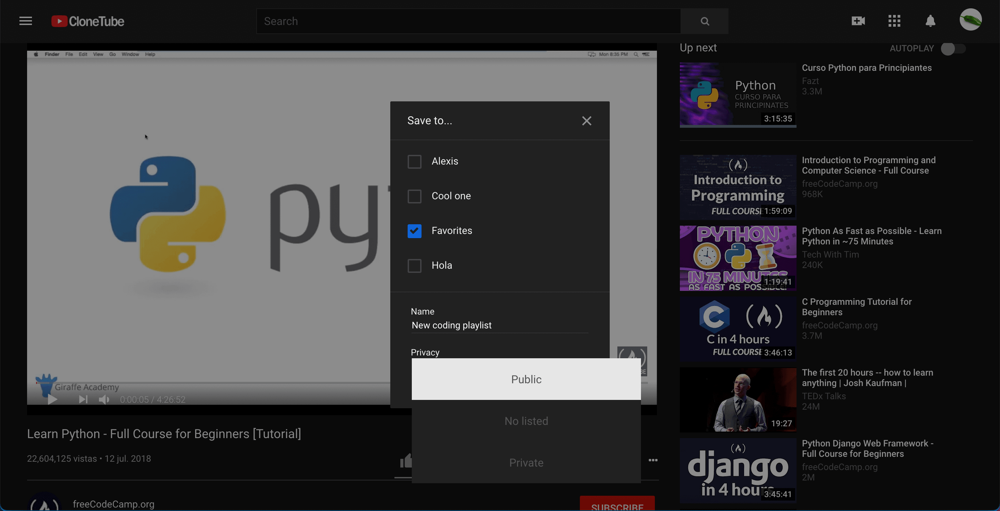
La sección derecha contiene los videos relacionados con el video
actual,puedes agregarlos a cualquier lista de reproducción, o reproducir
el video, al llegar al final de la página, se cargaran mas videos
relacionados, esta acción se realizará solo 5 veces por video.
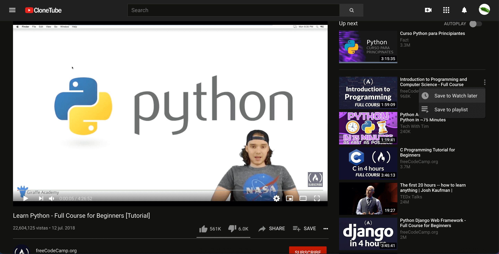
La página de Inicio
La página de Inicio incluye dos o más secciones de videos, estas pueden
incluír videos en tendencia y videos que son noticias de último momento.
Cada miniatura de video incluye el titulo del video, la imagen
miniatura, la duración y la información del canal (en caso de incluírlo,
tiene un ícono de usuario verificado o artista oficial). Cuando los
usuarios estan logueados y han visto algún video, la miniatura mostrará
una barra de progreso e iniciará el video en el segundo indicado por el
progreso.
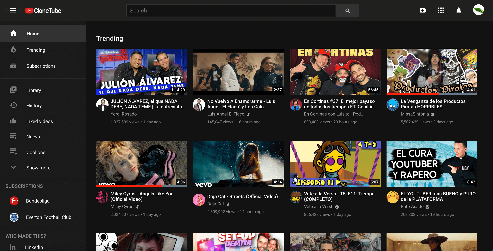
La página de tendencias
La página de tendencias incluye los videos en tendencias y los muestra
en una lista. Las miniaturas de videos incluyen las mismas
características de las miniaturas en la página de Inicio.
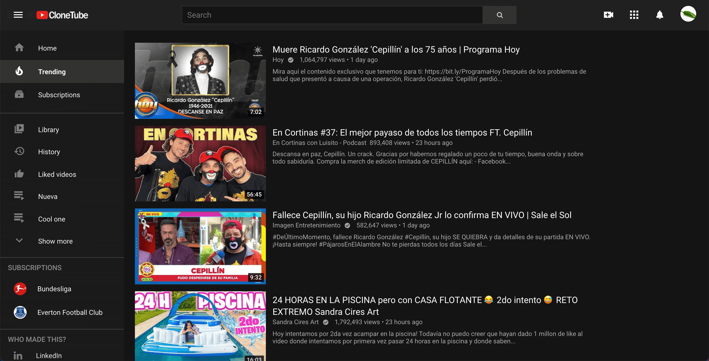
La página de Biblioteca
Esta página esta dividida en dos secciones, izquierda y derecha, la
seccion derecha incluye información general del usuario, incluyendo
datos como el número de subscripciones, el número de videos subido y el
número de videos que a los que el usuario ha dado me gusta. La sección
izquierda de la página incluye 4 secciones, en la cual muestra los
últimos videos o listas de reproducción que el usuario ha agregado a la
lista de reproducción "Ver más tarde", "Videos que me gustan", videos en
el historial y las playlists creadas por el usuario. Las miniaturas de
video incluyen los datos el titulo del video, los datos del canal (en
caso de incluirlo el ícono de verificado/artista oficial), así como el
progreso de los videos vistos.
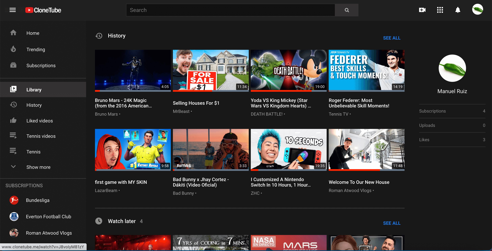
La página de Historial
Esta página incluye el historial de videos y los términos de búsqueda
del usuario. Esta dividida en dos secciones, la sección derecha incluye
un formulario de búsqueda para encontrar un término específico en el
historial de videos. Además de opciones para seleccionar el contenido
del historial que se desea visualizar, seleccionando entre historial de
videos e historial de bùsqueda. También se incluye la opcion para borrar
el historial de búsqueda o de historial de videos. La sección izquierda,
visualiza el contendo de los historiales de búsqueda. El historial de
videos esta seccionado por el día más reciente en el que se visualizaron
los videos. Si el tiempo de visualización es menor a 7 días, se mostrará
el nombre del dīa (Lunes, Martes, Viernes...), en caso de ser mayor a 7
días se mostrará el número de día y el nombre del mes abreviado (Oct 7,
Nov 12...).
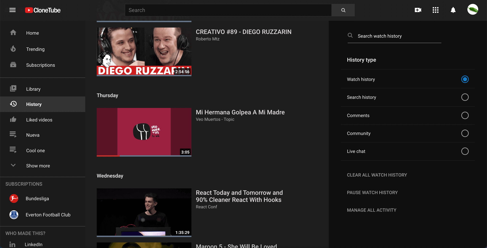
En el historial de búsqueda, se muestran los términos de búsqueda
realizados por el usuario en un orden descendente en base a la última
vez que se realizó cada término de búsqueda. Además de mostrar el
término de búsqueda, se muestra hace cuanto fue realizada la última
búsqueda de cada termino, en segundos, minutos, horas, días, semanas o
años, dependiendo la fecha de realizada la última búsqueda.
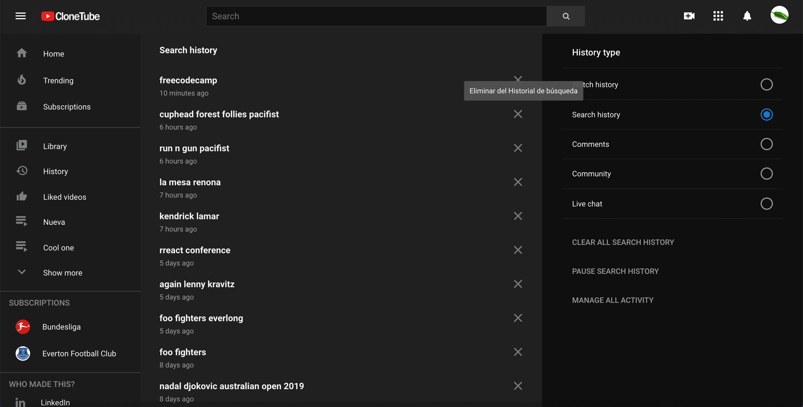
La página de búsqueda
Muestra los videos arrojados por una búsqueda de acuerdo al término
ingresado por el usuario, las miniaturas de los videos incluyen los
datos del video, como imagen miniatura, el progreso del video si el
usuario lo ha visualizado antes, el usuario que publica, la descripción
y duración del video.
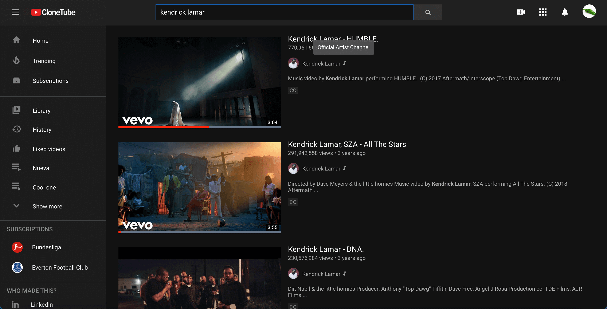
La página de Suscripciones
Muestra los canales al que el usuario se ha suscrito, y permite eliminar
o agregar suscripciones. Los canales a los cuales le usuario esta
suscrito, pueden visualizarse también en la barra lateral de navegación.
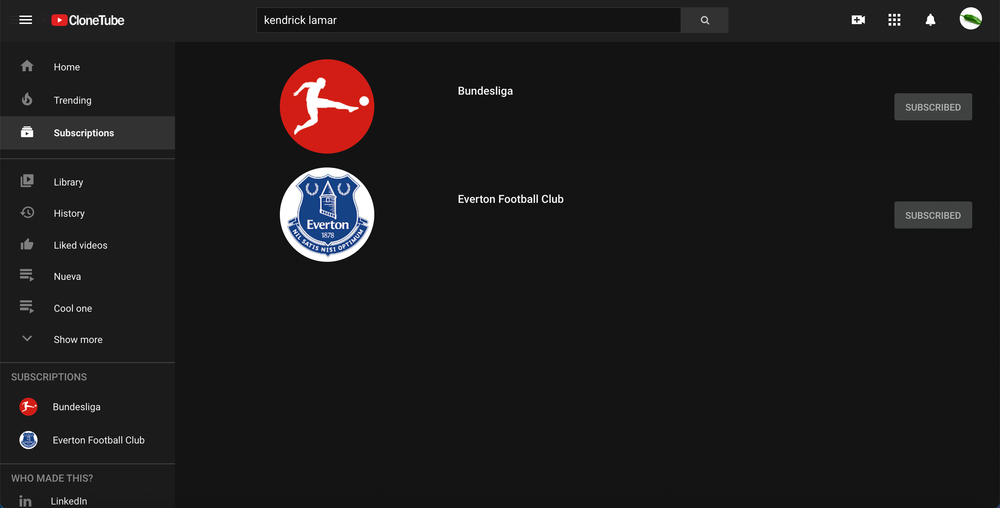
La barra de navegación
La barra de navegación permite al usuario realizar búsqueda de videos,
el formulario de búsqueda realizará recomndaciones de términos de
búsqueda.
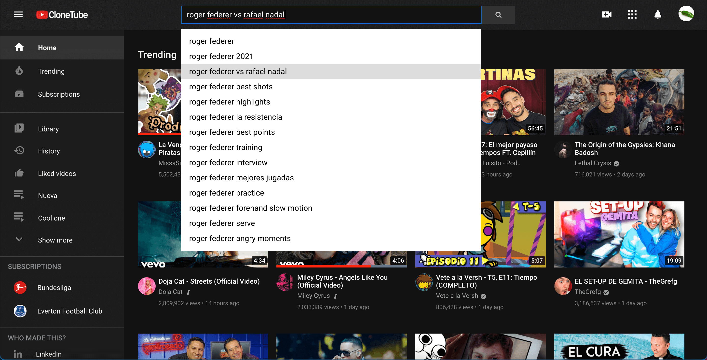
Además del formulario de búsqueda, permite al usuario iniciar sesión, o
activar un menú dropdown, en el cual se puede terminar la sesión,
cambiar el tema del sitio, entre claro y obscuro, y también se puede
cambiar el idioma del sitio.